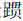

一九四二年六月二十九日
××兄：
读手教，承问动静，甚感！身所至，心即安之，乡居渐惯，微怯城中繁闹矣，遂任闲散。阅报，知城中文友尚时时相聚，切磋文学，心为之动，而户外竹影鹃声，若有不忍相违者，乃罢返城之计。久许冰心、文藻兄登山奉访，疏懒至今，犹未践诺，昨为小诗致歉，亦喜赐阅否？
“中年喜到故人家，挥汗频频索好茶！且共儿童争饼饵，暂忘兵火贵桑麻；酒多即醉临窗卧，诗短偏邀逐句夸；欲去还留伤小别，门前指点月钩斜！”
此地茅屋低仄，而前后皆窗，竹林掩覆，略不苦暑。屋后小院，种南瓜数蔓，好雨时来，瓜垂垂若盘大矣。院后，佃户一家，颇具鸡犬；水牛犊一，院外食草，时侧首定目视人，若有情者；偶尔低鸣，声悲涩，不类黄牛。屋前，巨石作坝，为晒谷之用，略如北方场院；围以短篱，皆扶豆蔓。篱外田水丰足，稻秧深绿，青蛙日夕作歌，行腔微嫌单调尔！
茅舍距组缃兄宅约七里，循田径行，小溪曲折，翠竹护岸，时呈幽趣，白鹤满林，即近友家矣。星期日，往往相访，日暮始别，以尽谈兴。近中组缃兄治文亦勤，《鸭嘴涝》后，又成短篇，约两万言。吴嫂持家至勤苦，小花猪而外，更饲鸡鸭，弟已食其两鸡一鸭矣！端午大雨，组缃兄邀饮，携伞远征。么娃小江，著新鞋来往，即跌泥中。诗纪二事：
“端午偏逢风雨狂，村童仍著旧衣裳。相邀情重携蓑笠，敢为泥深恋草堂？有客同心当骨肉，无钱买酒卖文章！前年此会鱼三尺，不似今朝豆味香！”
“小江脚短泥三尺，初试新鞋来去忙；迎客门前叱小犬，学农室内种高粱；偷尝糖果佯观壁，偶发文思乱画墙！可惜阶苔著雨滑，仰天

倒满身浆！”以四月二十五日抵此，《归去来兮》前四幕在修改中，第五幕待写。乡间清静，文率加速，五月初，即竟全稿。每日早五时即起，作太极拳片刻。七时早餐，以鸡蛋代肉，佐以面疙疸菜叶汤，草草饱腹。饭后净拭几案，洗砚泡茶；约在八时，开始写作矣。尽十行纸四五张，在千字左右，停止工作；二年来，贫血症屡发，不敢多劳。午饭后，睡半小时；醒来，读诗答信而已。晚餐后，缓缓行千步；归来，烧土蚊香驱蚊近窗，聚而歼之，引以为快；残暴喜杀，或人之本性耶？佛法戒杀，实和平之本，于此悟之！
星期日休息，无雨，辄去赶场。距青木关场十里，土主场十二里，虎溪场八里，均步行往返。汗出如浆，不以为苦。场上瓜与豆最为悦目；鸡鸭雏亦娇美可爱，间有售小猫小狗者，须亦数十元一头矣！
五月七日，开始草剧稿《谁先到了重庆》。二十七日写成，才二十日耳。《归去来兮》及此，事前皆熟思之，故能速成。唯成稿与最初设计，总嫌相距甚远。心之所及，笔难尽达；心若飞行，云山俱可无阻；笔落纸上，如登蜀道，处处障碍，文艺非易言也！
六月，休息两周，十六日，拟《王老虎》故事，备作五幕话剧之用。日来，已成一幕，何时脱稿，尚不可知。
近中颇厌杂文，约稿者多婉拒之。盖文短而无精旨，则泛泛无可观；精心为之，又耗费时间；未若专一写剧本，幸能成篇，略足自慰！今夏希得剧四本，入秋或有买酒钱矣！
承嘱报近况，两月来生活略如所述，未知可作短稿用否？天暑，千万为公珍重！敬祝
著祺！
弟舍启六月二十九日，陈家桥石板场
原载1942年7月7日重庆《大公报·战线》